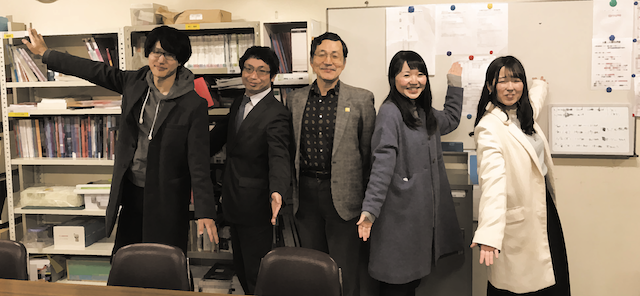

【国際教養学部】
〜言語文化学科〜
安間一雄ゼミ

Q1.コーパス研究とは何か？
A.コーパスとは現在および過去にわたる言語使用の記録を蓄積し、主としてコンピューターによる分析が可能な形態で保存されたデータベースを指します。
1970年代までの文献研究は目で見て数え分類するもので、規模や精度に限界がありました。
コンピューターの普及によりコーパス研究は飛躍的な進歩を遂げ、研究の方法論自体がコペルニクス的転回をしました。
喩えてみれば電話帳時代にはできなかった、電話番号から個人の氏名を探すようなものです。あるいは‘-ment’で終わる名詞（advertisement,involvement など）を紙の辞書から探すことを考えてみてください。
今やパソコンとアプリケーションを使って言語データを検索・集計・分類・分析することが可能になりました。加えてインターネット上のツールが昨今は充実していますので、やり方さえ身につければ素人の大学生でも問題発見ができます。
Q2.コーパスを使って分かる英語学習の問題点とは？
A.英語学習者の発話や作文を記録したコーパスがあります。ここには誤りや訂正表現のほか、学習者のレベルや母語の情報もありますので、これらを組み合わせるとどのような学習者がどのような英語を使う傾向があるのかが分かります。
日本人について言えば関係代名詞を使わないとか逆に‘I think’を使いすぎる傾向があることはよく言われます。これらを客観的なデータで示すことができます。昨年度の卒論では、テーマを与えられれた対話の際に、香港やシンガポールなどの英語先進地域の学習者はさまざまな表現を多用するのに対して日本人学習者は固定的な表現（例えば ‘I agree’）しか使えないことが分かりました。
ここから柔軟な言語使用訓練を行う機会が日本では乏しいことが分かりました。
Q3.ゼミでは他にどのような内容を学ぶのか？
A.英語の語法(語彙・文法などの使用規則)の実態をコーパスを用いて検証できます。例えば、受験英語で学んだ表現は今でも使われているのか？
高校の英語教科書に出てくる 語彙でどのくらい実生活をカバーできるのか？特定の表現の許容度が話し言葉と書き言葉、あるいは地域により違いがあるのか？などの研究課題が該当します。
日常的に英語の使い方に関心がある人の疑問に答えます。